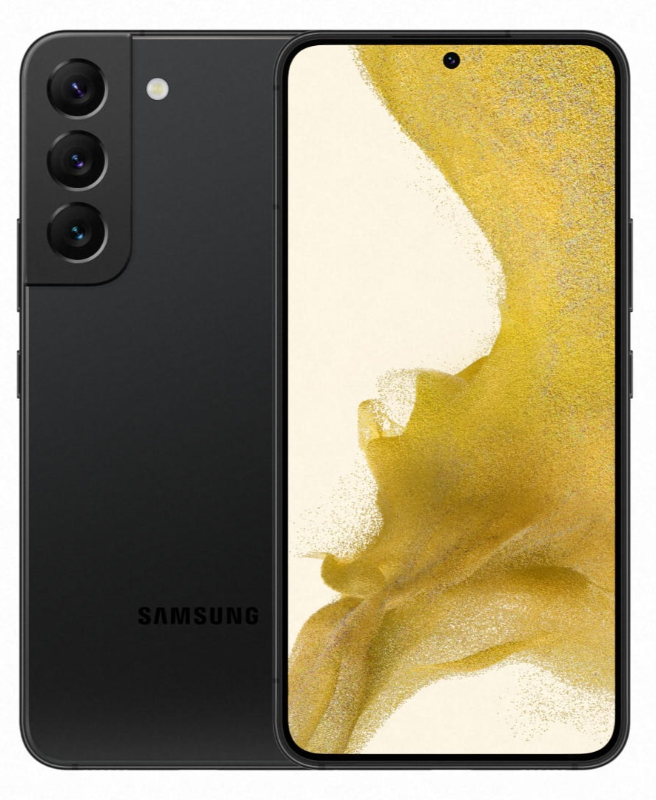
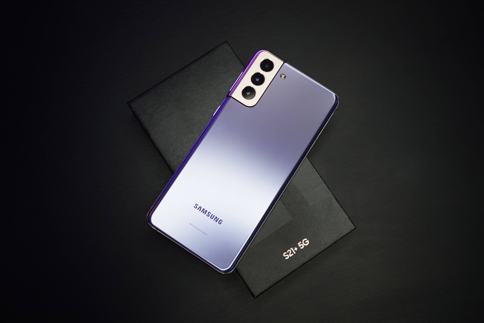
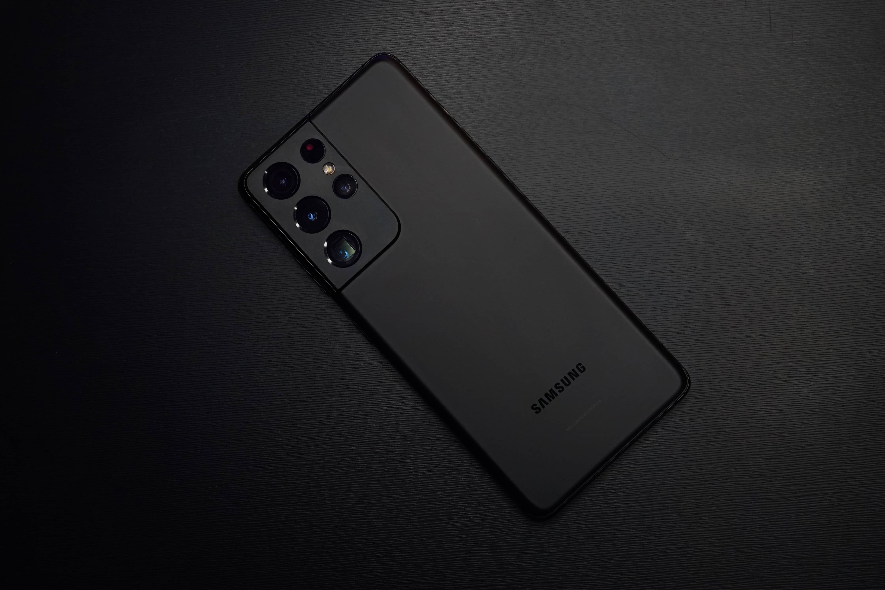
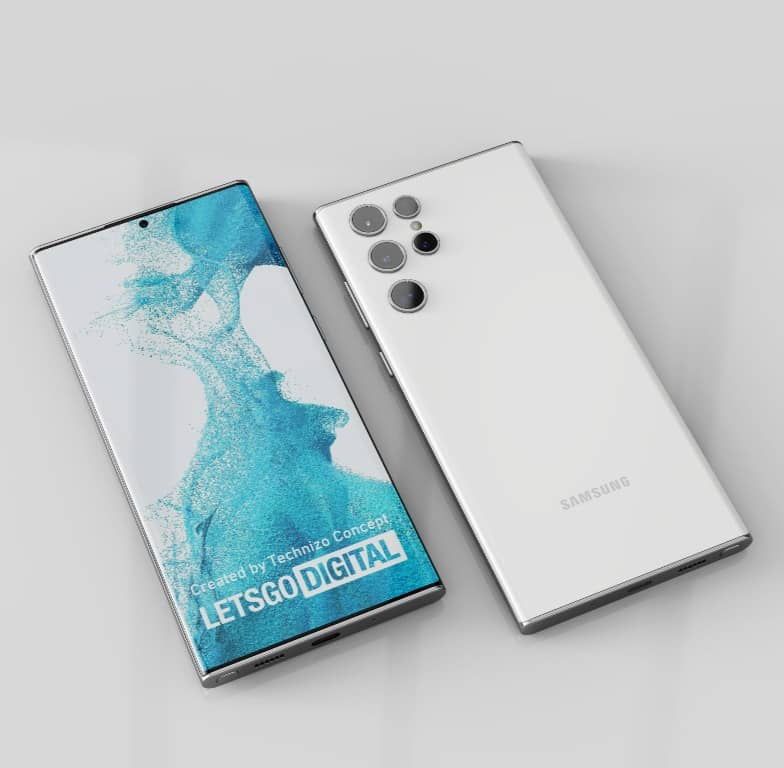

Samsung Galaxy S22 El primer procesador de 4 nm en Samsung Galaxy Una batería que dura más de 24 horas, incluso con 5G Mas informacion
 Samsung Galaxy S22 + El primer procesador de 4 nm en Samsung Galaxy Una batería que dura más de 24 horas, incluso con 5G Mas informacion
 Samsung Galaxy S21+ 5G La pantalla más inteligente en un teléfono inteligente El chip más rápido en un teléfono Galaxy Mas informacion
 Samsung Galaxy S21 Ultra 5G La pantalla más vívida y brillante en un teléfono inteligente El chip más rápido en un teléfono Galaxy Mas informacion
 Samsung Galaxy S22 Ultra El mayor avance en nuestra tecnología de video El primer procesador de 4 nm en Samsung Galaxy Mas informacion
Samsung Galaxy Watch Active 2 La pantalla más vívida y brillante en un teléfono inteligente El chip más rápido en un teléfono Galaxy Mas informacion
Samsung Galaxy Buds Live Mide la composición corporal con el potente sensor bioactivo Samsung Diseño elegante, simple e icónico Mas informacion